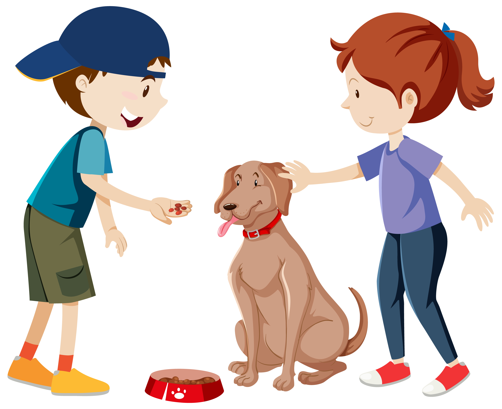
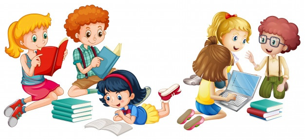

- Speaking: Different speacking spanish resources for study and practice
Speaking common dialog to take a travel
Speaking common dialog to take a hotel reservation
- Listening: Different listening spanish resources for study and practice
-
Listening with transcripsion to improve listening capacity
Mi perro y yo
 -
Listening with transcripsion to improve listening capacity
Me gusta leer
 - Reading: Different reading spanish resources for study and practice
-
El niño y los clavos
Había un niño que tenía muy mal carácter. Un día, su padre le dio una bolsa con clavos y le dijo que cada vez que perdiera la calma, clavase un clavo en la cerca del patio de la casa. El primer día, el niño clavó 37 clavos. Al día siguiente, menos, y así el resto de los días. Él pequeño se iba dando cuenta que era más fácil controlar su genio y su mal carácter que tener que clavar los clavos en la cerca. Finalmente llegó el día en que el niño no perdió la calma ni una sola vez y fue alegre a contárselo a su padre. ¡Había conseguido, finalmente, controlar su mal temperamento! Su padre, muy contento y satisfecho, le sugirió entonces que por cada día que controlase su carácter, sacase un clavo de la cerca. Los días pasaron y cuando el niño terminó de sacar todos los clavos fue a decírselo a su padre.
Entonces el padre llevó a su hijo de la mano hasta la cerca y le dijo:
“Has trabajo duro para clavar y quitar los clavos de esta cerca, pero fíjate en todos los agujeros que quedaron. Jamás será la misma. Lo que quiero decir es que cuando dices o haces cosas con mal genio, enfado y mal carácter dejas una cicatriz, como estos agujeros en la cerca. Ya no importa que pidas perdón. La herida siempre estará allí. Y una herida física es igual que una herida verbal. Los amigos, así como los padres y toda la familia, son verdaderas joyas a quienes hay que valorar. Ellos te sonríen y te animan a mejorar. Te escuchan, comparten una palabra de aliento y siempre tienen su corazón abierto para recibirte”.
Las palabras de su padre, así como la experiencia vivida con los clavos, hicieron con que el niño reflexionase sobre las consecuencias de su carácter. Y colorín colorado, este cuento se ha acabado.
From:Etapa Infantíl
-
La ratita blanca
El hada soberana de las cumbres invitó un día a todas las hadas de las nieves a una fiesta en su palacio. Todas acudieron envueltas en sus capas de armiño y guiando sus carrozas de escarcha. Sin embargo, una de ellas, Alba, al oír llorar a unos niños que vivían en una solitaria cabaña, se detuvo en el camino. El hada entró en la pobre casa y encendió la chimenea. Los niños, calentándose junto a las llamas, le contaron que sus padres hablan ido a trabajar a la ciudad y mientras tanto, se morían de frío y miedo.
– “Me quedaré con vosotros hasta que vuestros padres regresen”, prometió.
Y así lo hizo, pero a la hora de marcharse, nerviosa por el castigo que podía imponerle su soberana por la tardanza, olvidó la varita mágica en el interior de la cabaña.
El hada de las cumbres miró con enojo a Alba.
“No solo te presentas tarde, sino que además lo haces sin tu varita? ¡Mereces un buen castigo!”.
Las demás hadas defendieron a su compañera en desgracia.
– “Sabemos que Alba no ha llegado temprano y ha olvidado su varita. Ha faltado, sí, pero por su buen corazón, el castigo no puede ser eterno. Te pedimos que el castigo solo dure cien años, durante los cuales vagara por el mundo convertida en una ratita blanca”.
Así que si veis por casualidad a una ratita muy linda y de blancura deslumbrante, sabed que es Alba, nuestra hadita, que todavía no ha cumplido su castigo.
From:Etapa Infantíl
- Writing: Different writing spanish resources for study and practice